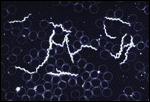

Case Study 2
Boy with fever and rash
Borrelia burgdorferi is correct!

|
In early June a 15-year old boy comes to your practice with his mother. He had been fine until about five days ago when he developed a fever. He has a stiff neck and a rash on his back. He and his family live in Connecticut near the New York State border. His mother reports that he was playing in the woods with some friends recently.
Question 2 of 6
We established that the patient has Lyme disease.
|
A. Streptococcus pyogenes Infections with Streptococcus pyogenes can result in a variety of conditions ranging from "strep throat", impetigo and scarlet fever to toxic-shock-like syndrome. However, Streptococcus pyogenes does not cause Lyme disease. Systemic Infections with Streptococcus pyogenes can result in skin lesions such as cellulitis, scarlet fever or necrotizing fasciitis. These are acute and often life-threatening infections, and the lesions differ from the rash observed in this patient.B. Borrelia burgdorferi 
Dark field microscopy
of B. burgdorferiBorrelia burgdorferi is the causative agent of Lyme disease. This bacterium, just like Treponema pallidum, is a member of the spirochetes, the family of spiral-shaped bacteria. These bacteria can move with the help of "internal" flagella, or axial filaments, which are hidden between the bacterium's inner and outer membrane and result in a cork-screw like motion.
C. Pseudomonas aeruginosa Pseudomonas aeruginosa is an opportunist which can cause skin lesions. Infections usually follow either damage to the skin or septicemia (in which the patient would be seriously ill). Infections with this organism do not result in Lyme disease.
D. Clostridium perfringens
Clostridium perfringens can cause anaerobic cellulitis and gas gangrene usually following profound tissue damage, and the resulting disease is severe and life-threatening. The lesions of gas gangrene are substantially different from the rash observed in this patient.


University of Arizona
Tuesday, August 4, 1998
Contact the Development Team
http://biology.arizona.edu
All contents copyright © 1998. All rights reserved.